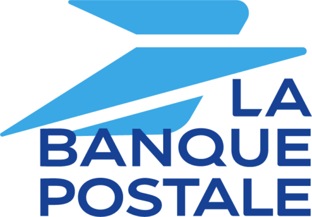
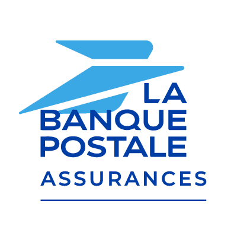

Contexte
La Banque Postale is a French public bank, a 100% subsidiary of the La Poste Group. Founded on January 1, 2006, it inherited the financial services of La Poste. It offers a comprehensive range of financial products and services including retail banking, savings, loans, insurance (life and non-life via La Banque Postale Assurances IARD in partnership with Groupama), asset management, and investment solutions. It serves individuals, professionals, small businesses, and local public authorities. The bank is recognized by law for its accessibility banking mission and is committed to ethical, responsible, and citizen-oriented banking.
Palette principale
003882009FE3FFD500FFFFFFPalette secondaire
E8F4FDF5F5F51A1A2E33333300A651E63312F5A623B0D4F1Typographie
| Famille | Graisse | Effets | Usage |
|---|---|---|---|
| Alpha Poste | 700 | bold | Brand name, logotype, and primary brand identity elements. Custom bespoke sans-serif typeface designed by Jean François Porchez in 2005 for the identity and logotype of La Banque Postale. It is a sans-serif version of the original La Poste lettering designed by Porchez in 1993. |
| Alpha Poste | 400 | Secondary brand identity elements and sub-brand names such as 'Assurances IARD'. Regular weight for complementary logo text. | |
| Arial | 700 | bold | Headings and display text on web and digital platforms. Used as a web-safe fallback that preserves the clean, modern sans-serif character of the brand identity. Used for H1, H2, H3 headings and promotional titles like '2 mois offerts'. |
| Arial | 400 | Body text, paragraph content, product descriptions, legal mentions, and general website copy. 16px minimum body size for readability. Line height 1.5 for comfortable reading. | |
| Arial | 600 | Subheadings, call-to-action buttons, navigation labels, and emphasis text. Semi-bold weight for UI elements that need hierarchy distinction from body text. | |
| Helvetica Neue | 400 | Fallback font for macOS/iOS devices, maintaining the clean Swiss sans-serif aesthetic. Used across body and UI contexts when Arial is not the preferred rendering. |
Logos (fichiers locaux)
-

-

Assurance Auto La Banque Postale — Promo 2 Mois Offerts — visuels


Vision
La Banque Postale positions itself as a citizen-focused bank ('banque citoyenne') that serves the general interest. Its vision is to be a bank that drives positive societal impact through responsible, inclusive, and sustainable banking. It aims to transform into the bank of tomorrow while preserving the foundational values of trust, proximity, and accessibility inherited from La Poste. The brand seeks to make quality banking services accessible to all, including those in situations of financial fragility, and to be a pioneer in ethical and green finance. For its insurance branch, the vision extends to providing simple, readable, and citizen-oriented insurance products with competitive pricing and genuine customer care.
Valeurs
Trust (Confiance) — Inherited from La Poste, built on 200+ years of public service in France. Proximity (Proximité) — A nationwide network of post offices ensuring close, personal relationships with customers. Accessibility (Accessibilité) — The only French bank legally mandated for banking accessibility via the Livret A. Citizen Energy (Énergie citoyenne) — Serving all citizens and the public interest, not just shareholders. Simplicity — Offering clear, readable, and transparent financial and insurance products. Responsibility — Commitment to corporate social responsibility, ethical banking, sustainability, and inclusion. Innovation — Adapting to modern digital needs while staying true to heritage and values. Solidarity — Supporting customers in financial difficulty and promoting financial literacy.